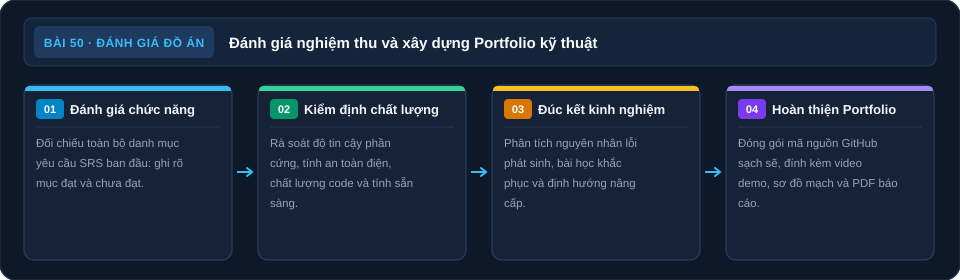

Demo Đồ Án & Tổng Kết Giai Đoạn
Trình bày sản phẩm — từ vấn đề đến giải pháp — và đánh giá toàn diện hành trình 7 tuần vừa qua.
🎬 Demo: 30 phút📋 Review & Retrospective: 60 phút
🎯 Mục tiêu bài học
- Demo đồ án hoàn chỉnh — live demonstration trước người khác
- Trình bày quy trình thiết kế: SRS → Schematic → Firmware → PCB → Test
- Nhìn lại những thách thức gặp phải và cách giải quyết
- Đánh giá khách quan: đạt được gì, chưa đạt được gì
- Chuẩn bị portfolio: GitHub, ảnh sản phẩm, video demo
- Lên kế hoạch học tiếp: STM32, FreeRTOS, Embedded Linux
1. Bảng đánh giá đồ án toàn diện
| Tiêu chí | Trọng số | Điểm tối đa | Tự đánh giá | Ghi chú |
|---|---|---|---|---|
| Chức năng hoạt động đúng yêu cầu SRS | 30% | 30 | _____ | Bao nhiêu FR pass? |
| Thiết kế phần cứng (schematic, PCB) | 20% | 20 | _____ | DRC pass, layout chuẩn? |
| Chất lượng firmware (cấu trúc, debug) | 20% | 20 | _____ | State machine, no blocking? |
| Tài liệu (README, Doxygen, GitHub) | 15% | 15 | _____ | Người khác có hiểu không? |
| Khả năng trình bày và giải thích | 15% | 15 | _____ | Demo rõ ràng, giải thích được hỏi |
| Tổng | 100% | 100 | _____ |
2. Retrospective — Nhìn lại hành trình 7 tuần
4 câu hỏi Retrospective
- Went well (Điều gì diễn ra tốt)? Kỹ năng nào bạn cảm thấy tự tin nhất sau khóa học?
- Went wrong (Điều gì khó khăn)? Bài nào/giai đoạn nào mất nhiều thời gian nhất?
- Learned (Bài học rút ra)? Nếu làm lại từ đầu, bạn sẽ làm khác gì?
- Next action (Bước tiếp theo)? Kỹ năng nào sẽ học tiếp? Dự án nào sẽ làm?
3. Portfolio — Xây dựng hồ sơ kỹ sư
| Hạng mục | Làm ngay | Mục tiêu |
|---|---|---|
| GitHub Profile | Tạo profile README.md, upload đồ án | 3–5 repo public trong 1 tháng |
| Video demo | Quay video 2–3 phút giới thiệu sản phẩm | YouTube hoặc LinkedIn post |
| Ảnh sản phẩm | Chụp ảnh PCB, demo hoạt động | GitHub, portfolio website |
| Portfolio website | GitHub Pages hoặc Notion | Showcase 3+ dự án |
| Hackathon | Đăng ký hackathon điện tử/IoT | Tham gia ít nhất 1 hackathon trong 3 tháng |
Checklist
✅ Bài 50 — Sau buổi Demo
Sơ đồ tổng hợp Bài 50

Đánh giá sau demo
Dự án và hành trình học. Các nhánh bên dưới dẫn tới nội dung đã học trong bài.
Nguồn: tự vẽ cho giáo trình; đối chiếu theo các mục của bài.
Đọc nội dung sơ đồ bằng chữ
- Chức năng: Đối chiếu yêu cầu SRS đã đạt. (mục Bảng đánh giá đồ án).
- Chất lượng: Xem mạch, firmware và tài liệu. (mục Bảng đánh giá đồ án).
- Nhìn lại: Tốt, khó, đã học, việc kế. (mục Retrospective).
- Portfolio: Repo, ảnh và video demo. (mục Portfolio).